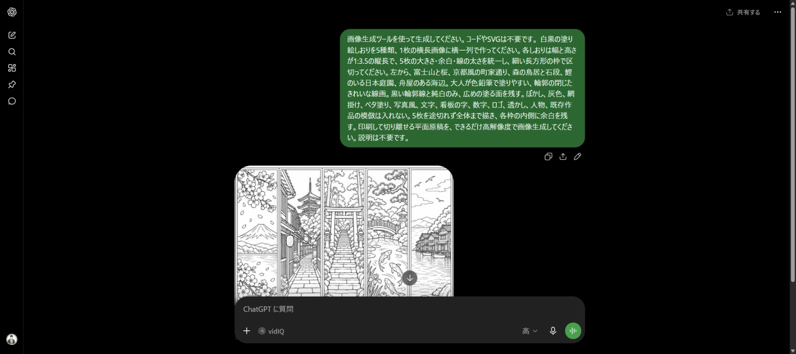
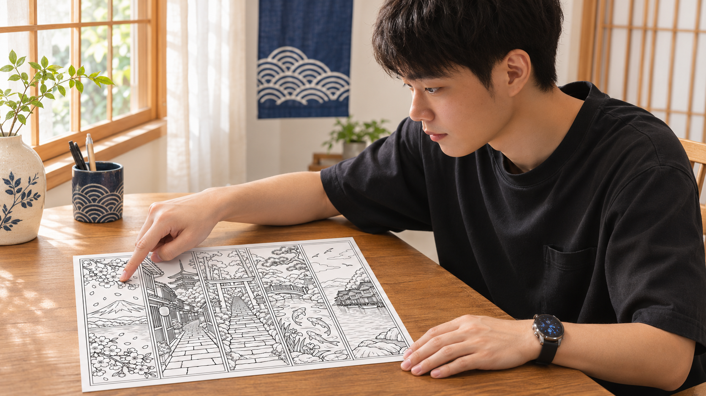
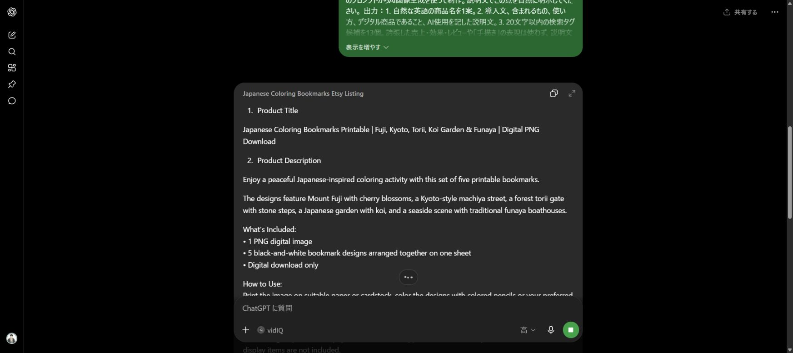

すみっち式 日本の風景を塗り絵しおりに

「稼げる方法を教えて」で止まらず、
まずは売るものを一つ、形にする。
今回作るのは、この5柄

塗って、切り離して使うしおり
ChatGPTを開ける環境と画像生成機能を用意して、この作例と同じ流れで進めてください。
ChatGPTで線画を作る

下の指示文をChatGPTへ送ります。できた画像は開いて確認し、保存してください。
線画を作る指示文を開く
画像生成ツールを使って生成してください。コードやSVGは不要です。 白黒の塗り絵しおりを5種類、1枚の横長画像に横一列で作ってください。各しおりは幅と高さが1:3.5の縦長で、5枚の大きさ・余白・線の太さを統一し、細い長方形の枠で区切ってください。左から、富士山と桜、京都風の町家通り、森の鳥居と石段、鯉のいる日本庭園、舟屋のある海辺。大人が色鉛筆で塗りやすい、輪郭の閉じたきれいな線画。黒い輪郭線と純白のみ、広めの塗る面を残す。ぼかし、灰色、網掛け、ベタ塗り、写真風、文字、看板の字、数字、ロゴ、透かし、人物、既存作品の模倣は入れない。5枚を途切れず全体まで描き、各枠の内側に余白を残す。印刷して切り離せる平面原稿を、できるだけ高解像度で画像生成してください。説明は不要です。
送信・保存と、線画の確認
- ChatGPTの入力欄にコピーした全文を貼り付け、送信。
- 画像ができたら開き、5柄の数・順番・上下の切れ・余計な文字を確認。
- 画像の保存／ダウンロード操作で端末へ保存し、保存したPNGをもう一度開く。
- 線の乱れがあれば、直したい場所と残す条件を伝えて修正。商品にする前に試し刷りをする。
実際に使ったPC画面を見る

同じ作例のPC版キャプチャ。タップで拡大できます。

日本ならではの風景を入れる。
僕はここがおすすめです。今回は富士山と桜、町家、鳥居など、見て分かる日本の風景を指定しています。
英語の商品原稿を作る

保存した画像を同じチャットへ添付し、下の指示文を送ります。商品の中身まで伝えるのが大事です。
英語原稿を作る指示文を開く
次の塗り絵しおりセットをEtsyで紹介する英語の商品名と説明文を作ってください。 題材：富士山と桜、京都風の町家通り、森の鳥居と石段、鯉のいる日本庭園、舟屋のある海辺の5種類。白黒の線画。色鉛筆で塗って、切り離して使うしおりです。 形式：5種類が1枚に並んだPNG画像1点のデジタルダウンロード。物理的な商品は発送しません。フレーム、色鉛筆、本は含みません。実際のピクセル数と推奨印刷サイズは出品前に確認して追記するため、未確認の数値、300dpi、PDF、商用利用許可などは創作しないでください。 制作方法：販売者のプロンプトからAI画像生成を使って制作。説明文でこの点を自然に明示してください。 出力：1. 自然な英語の商品名を1案。2. 導入文、含まれるもの、使い方、デジタル商品であること、AI使用を記した説明文。3. 20文字以内の検索タグ候補を13個。誇張した売上・効果・レビューや「手描き」の表現は使わず、説明文は200語以内にしてください。英語の完成原稿だけを出力してください。
画像を添付して、原稿を保存する
- ChatGPTの添付操作から、保存した5柄のPNGを選ぶ。
- 指示文2の全文を貼り付けて送信する。
- 返ってきた商品名・説明文・タグをテキストへ保存する。
- 「1 PNG」「5柄が1枚」「物理発送なし」「AI使用」が実物と一致するか確認する。
同じ作例の英語原稿例を開く
Japanese Coloring Bookmarks - 5 Landscape Designs on One Printable PNG Sheet
Japanese Coloring Bookmarks - 5 Landscape Designs on One Printable PNG Sheet Enjoy a Japanese-inspired coloring activity with five bookmark designs on one sheet: Mount Fuji with cherry blossoms, a Kyoto-style machiya street, a forest torii gate with stone steps, a Japanese garden with koi, and seaside funaya boathouses. WHAT YOU RECEIVE One PNG digital image, 1499 x 1049 pixels, containing all five black-and-white designs arranged side by side. This is one sheet, not five separate image files. HOW TO USE Download the PNG, print it on suitable paper, color the designs, and cut along the bookmark borders. Check the print preview and choose a size that keeps the lines clear. PLEASE NOTE This is a digital download. No physical item will be shipped. Books, frames, pencils, and other display items are not included. The designs were created with AI image generation using the seller's prompts. TAGS coloring bookmarks, japan bookmarks, printable bookmark, japanese landscape, mount fuji art, cherry blossom art, kyoto coloring, torii gate art, koi garden, funaya boathouse, adult coloring, png download, bookmark sheet
実際の商品に合わせて、試し刷りで確認した印刷サイズや利用条件を追記してください。
実際に使った英語原稿のPC画面を見る

同じ作例の既存PC画面。上の原稿例とは分けて掲載しています。
英語の商品名と説明文まで作らせて、Etsyへの出品準備へ進みます。今回は「5柄を1枚のPNGで渡す」と具体的に伝えます。
Etsyへの出品準備

Etsyの出品画面では、見せる商品画像と購入後に渡すファイルをそれぞれ設定します。
Etsyでの操作と、出品前に決めること
- 販売者としての登録・ショップ準備を済ませ、Shop Manager → Listings → Add a listing を開く。
- 商品の種類でDigital filesを選び、内容に合うカテゴリ・制作方法などの必須項目を確認。
- 画像を追加し、Title・Description・Tagsに原稿を入れる。タグは13個以内、各20文字以内。
- Digital filesに購入者へ渡すPNGを添付する。今回の作例は1点・約2.22MBで、PNGのまま扱います。
- 価格・通貨・手数料・利用条件を確認し、プレビューを見る。準備中はSave as Draftで保存する。
推奨印刷サイズは試し刷り後に決めます。説明文ではAI画像生成を使用したことも明示してください。
- 5柄が1枚のPNGであると説明した
- 実物にないPDF・物理発送を約束していない
- AI使用・印刷条件・価格を確認した
- 商品画像とダウンロード原本を取り違えていない
公開前は、実際に渡すPNGを開いて最後にもう一度確認してください。
作例を保存して、一つ試す
線画・指示文2本・英語原稿例・出品準備メモをまとめました。まずは画像を開き、5柄の中身と原稿を照らし合わせてみてください。
ネット接続なしでもガイドと素材を開けます。ChatGPT・Etsyの利用には接続が必要です。
キット内のPNGと英語原稿は学習用の作例です。販売するときは、自分で制作した画像と実際の商品条件へ置き換えてください。
しおりを形にできたら、
次は「どう収益につなぐか」。
画像や英語原稿を作る方法が分かったら、買う理由や届け方も考えていきたいですよね。
僕の公式LINEでは「AIマネタイズの教科書」をお渡ししています。AIマネタイズの手法・プロンプト・テンプレート・ツール・実例を、次の一歩に使ってください。
 公式LINEで教科書を受け取る →
公式LINEで教科書を受け取る →